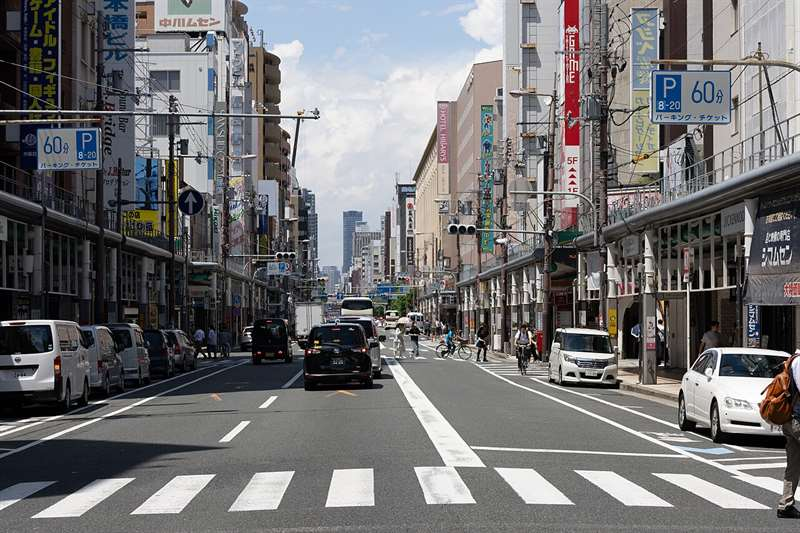
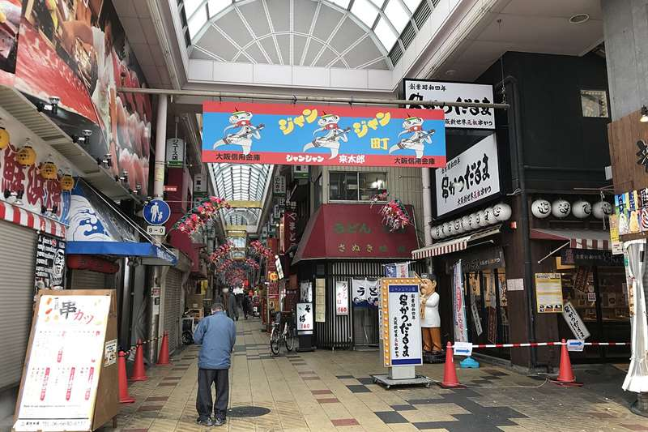
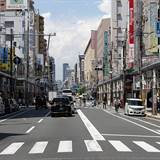
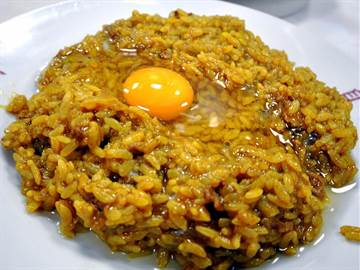
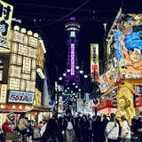
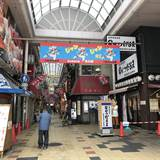
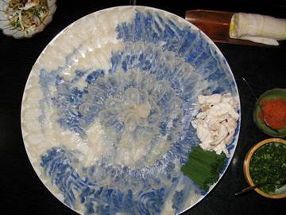

Giorno 6 di 15 · Martedì 8 dicembre · Osaka
Osaka #2: Den Den Town, il curry del 1910 e Shinsekai


In sintesi
- Mattina senza sveglia, poi il primo giro di Den Den Town.
- Pomeriggio il curry storico di Jiyuken e il secondo giro di Den Den Town.
- Sera Shinsekai al neon e il kushikatsu.
Itinerario
- 08:45Kyoto → Osaka — oggi si parte con calma, da sotto l'hotel: Hankyu da Omiya a Osaka-Umeda col limited express, ~45 minuti e ~410 yen, poi la metro Midosuji fino a Namba. Tutto con la ICOCA.
- 10:15Den Den Town (Nipponbashi) — dieci minuti a piedi da Namba verso est. È l'Akihabara di Osaka: elettronica, retrogaming, modellismo, manga usati. Meno luccicante e molto meno battuta dai turisti, il che di solito vuol dire prezzi migliori sull'usato. Molti negozi alzano la saracinesca fra le 10 e le 11: il primo giro è una ricognizione.
- 11:00Super Potato Nipponbashi e Retro-Game Camp — cartucce Famicom e Super Famicom sciolte, console testate, accessori. Qui il retrogaming costa meno che ad Akihabara perché non c'è la stessa pressione turistica.
- 12:00Surugaya, Jungle e Animate Nipponbashi — usato e nuovo su più piani: figure, dojinshi, carte, giochi. Surugaya ha spesso i bin con la roba senza scatola a poche centinaia di yen. (Il Mandarake Grand Chaos di Osaka non è qui ma ad Amerikamura, che avete visto sabato al Giorno 3.)
- 13:00Pranzo: il curry del 1910 — dieci minuti a piedi verso ovest, a Namba, da Jiyuken, il primo ristorante di cucina occidentale di Osaka (vedi sotto).
- 14:30Den Den Town, secondo giro il tempo largo della giornata — dieci minuti a piedi e siete di nuovo su Sakaisuji, stavolta senza orologio. Si rientra nei negozi del mattino con i prezzi già in testa e si allarga alle traverse: Ota Road, la via parallela verso ovest, è quella dei negozi di figure e delle vetrine a noleggio, cassette di plexiglass dove i privati vendono la loro roba a prezzo fisso. È un'ora e mezza senza orologio: un negozio di usato ne può mangiare due, ed è esattamente quello che deve succedere.
- 14:30Shitenno-ji (al posto del secondo giro) — cinque minuti di Midosuji da Namba fino a Tennoji, poi dieci a piedi verso nord. È il primo tempio buddista ufficiale del Giappone, fondato nel 593 d.C. dal principe Shotoku: la pagoda a cinque piani e il giardino interno sono una parentesi di silenzio totale fra il quartiere dell'elettronica e i neon di Shinsekai. Ingresso al recinto gratuito, 300 yen per il giardino, e da lì a Shinsekai sono quindici minuti a piedi verso ovest.
- 16:00Shinsekai — quindici minuti a piedi verso sud da Nipponbashi. Il quartiere costruito nel 1912 immaginando la Parigi e la Coney Island del futuro, poi rimasto congelato negli anni '60. Insegne enormi, pesci gonfiabili, statue di Billiken. È il posto più "vecchia Osaka" che vedrete.
- 16:15Tsutenkaku, da sotto — 103 metri, e non ci salite: di viste dall'alto ne fate due in tutto il viaggio e sono Umeda sabato e Shibuya a Tokyo. La torre serve da qui in basso, in fondo al corridoio di insegne — è la cosa che tiene insieme tutta Shinsekai, e la sera la cima si accende di luci che cambiano colore. Per strada e nei negozi trovate decine di statue di Billiken, il dio americano della fortuna che a Osaka ha attecchito e in America no: gli si gratta la pianta dei piedi.
- 16:45Janjan Yokocho — il vicolo coperto ai piedi della torre, lungo 180 metri: tavoli di shogi in strada, bar dove si beve alle tre del pomeriggio, kushikatsu ovunque. Le insegne si accendono proprio adesso.
- 17:30Spa World (opzionale) — enorme complesso termale con piani a tema europeo e asiatico, a due passi. 1.500 yen, e dopo cinque giorni di camminate è il modo migliore di passare un'ora. Due cose da sapere prima di pagare: i tatuaggi non sono ammessi — qui non basta coprirli come all'APA — e le zone europea e asiatica si scambiano fra uomini e donne ogni mese, quindi non state nella stessa e vi rivedete all'uscita.
- 19:00Cena a Shinsekai — kushikatsu, con la Tsutenkaku illuminata sopra la testa.
Le tappe su Google Maps

Den Den Town
Jiyuken
Tsutenkaku
Janjan Yokocho- Kushikatsu Daruma
Toccate una tappa e si apre in Google Maps: da lì Indicazioni vi dice treno e binario partendo da dove siete.
La mappa si carica solo se la toccate, per non consumare dati: il tracciato è a piedi; dove l'itinerario dice treno o metro, prendete quelli.
Dove mangiare
- PranzoJiyuken (自由軒 難波本店), a Namba, dal 1910 — il primo ristorante di cucina occidentale di Osaka. Il piatto è il meibutsu curry: riso e curry già mescolati insieme, con un tuorlo crudo in mezzo e qualche goccia di salsa Worcester sopra, da rompere e girare prima di mangiare. Il mescolare nasce quando non c'erano i cuociriso elettrici e serviva a tenere caldo il riso; il curry ha una base di brodo di tendine di manzo. Costa pochissimo, attorno ai mille yen, ed era il piatto preferito dello scrittore Oda Sakunosuke. Chiuso il lunedì; oggi è martedì. A due minuti dall'uscita 11 della stazione di Namba.
- CenaKushikatsu Daruma a Shinsekai, la casa madre dal 1929. Prendete il set misto e poi aggiungete asparago, maiale e formaggio. La salsa è in comune e non si intinge due volte.
- Di stagione

da ottobre a marzo è periodo di fugu, e Shinsekai è storicamente il quartiere dove si mangia. Cuochi con licenza statale, nessun rischio reale.
Note e dritte
La logica della giornata: è una linea dritta verso sud — Namba, Den Den Town e Shinsekai stanno su un asse di tre chilometri e si fanno interamente a piedi, e la mattina si parte senza sveglia. Osaka sud è il lato popolare e un po' sgangherato della città: rumoroso, ipercalorico, per niente elegante. È il contrario esatto sia di Kyoto sia della Osaka lucida di sabato.
Den Den Town è la vostra prima giornata nerd, e ha il tempo che le serve: due giri, prima e dopo pranzo, per circa quattro ore in tutto. I prezzi dell'usato qui sono mediamente più bassi di Akihabara, quindi se vedete una cartuccia o una figure che cercate da tempo, prendetela adesso invece di sperare di ritrovarla a Tokyo. Shitenno-ji è rimasto come alternativa al secondo giro, non come tappa fissa: è bello, ma è l'unica cosa di oggi che non è né cibo né negozi, e la regola del viaggio è che le giornate nerd si tengono larghe. Le regole su come si legge lo stato della merce usata sono nella pagina Shopping.
Niente sushi oggi, e niente Kuromon. Il sushi del viaggio è ridotto a due occasioni buone, Toyosu (Giorno 12) e l'omakase dell'ultimo pranzo (Giorno 15), quindi Osaka si mangia in un altro modo: il curry storico a pranzo e il kushikatsu la sera. Il mercato di Kuromon, a due passi da Den Den Town, resta fuori: è diventato in gran parte una via di spiedini per turisti a prezzi gonfiati, e come mercato "da girare" il posto è già di Nishiki.
Sul kushikatsu, una regola sacra: ogni tavolo ha una vaschetta di salsa in comune, e non si intinge due volte (ni-do zuke kinshi). Se vi serve più salsa, usate un cavolo crudo come cucchiaio. È l'unica regola di galateo che a Osaka prendono davvero sul serio.
Se oggi non gira. Si accorcia il secondo giro Il blocco elastico è il secondo giro di Den Den Town: se siete cotti dopo pranzo, si va dritti a Shinsekai e si rientra prima. Shinsekai al buio è la sera. Niente di oggi esiste solo oggi: è una giornata che si piega senza rompersi.